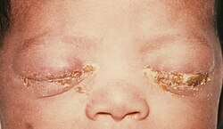

A gonorréia é uma infecção bacteriana frequente, causada pela Neisseria gonorrhoeae, um diplococo Gram-negativo de transmissão quase que exclusiva através de contato sexual ou perinatal. Primariamente afeta membranas mucosas do trato genital inferior, e mais raramente, as mucosas do reto, orofaringe e conjuntiva.
A principal forma de transmissão é a relação sexual(anal, vaginal, oral) sem proteção com uma pessoa infectada. A taxa de transmissão de homens para mulheres é maior que de mulheres para homens. Gestantes infectadas por N. Gonorrhoeae podem transmitir a criança no momento do parto, mas não na gravidez.
O uso de preservativos durante a relação sexual pode ajudar a prevenir a transmissão de gonorreia e de outras infecções sexualmente transmissíveis (ISTs) de uma pessoa para outra.
O tratamento principal para gonorreia não complicada é monoterapia com ceftriaxona por via intramuscular em dose única. O tratamento de N gonorrhoeae é importante para a prevenção de infertilidade, dor pélvica crônica e gravidez ectópica em mulheres.
